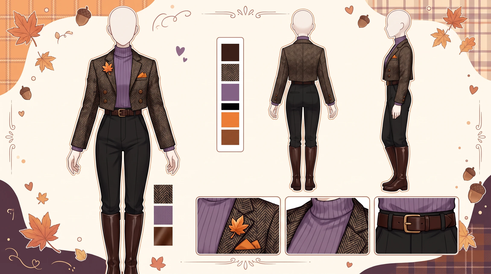
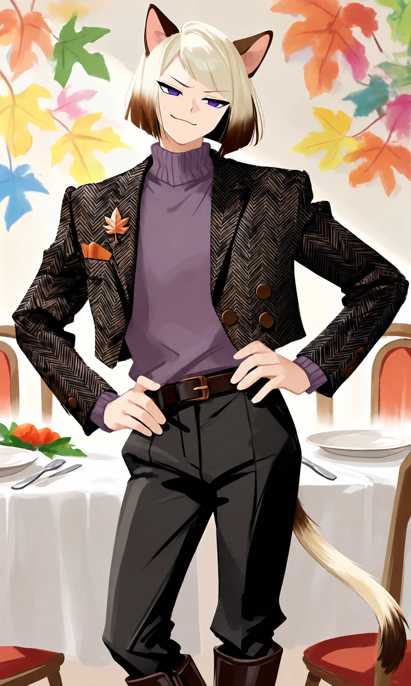

Plum & Herringbone

Outfit Prompt
A fine-knit muted plum mock-neck sweater beneath a cropped charcoal herringbone jacket with dark brown buttons and a copper-colored pocket square. Slim charcoal trousers, a dark brown leather belt, and dark brown Chelsea boots. A small antique-copper oak-leaf pin decorates the jacket lapel.
Outfit Examples

